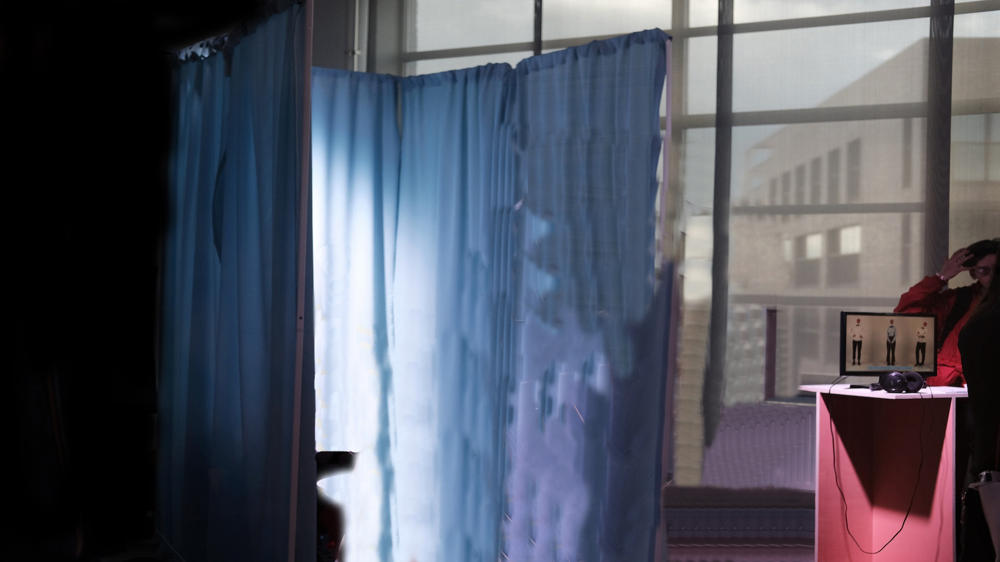
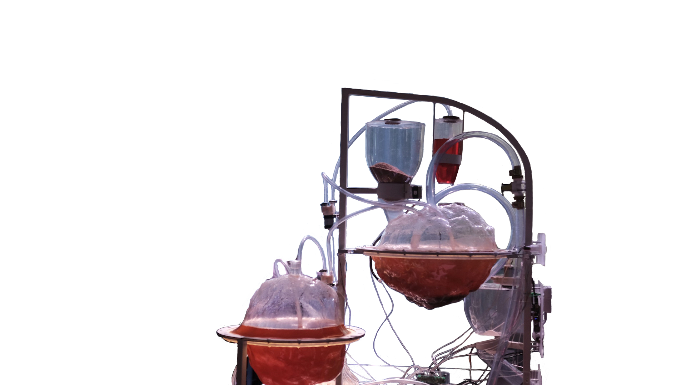
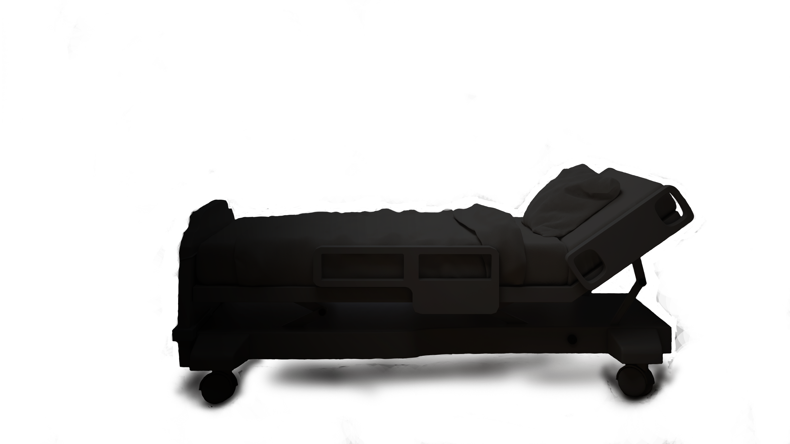
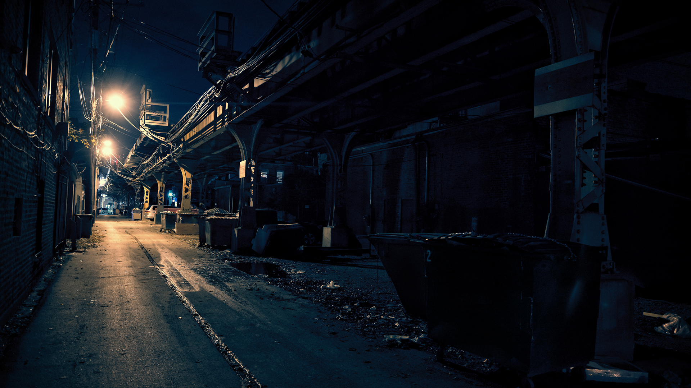
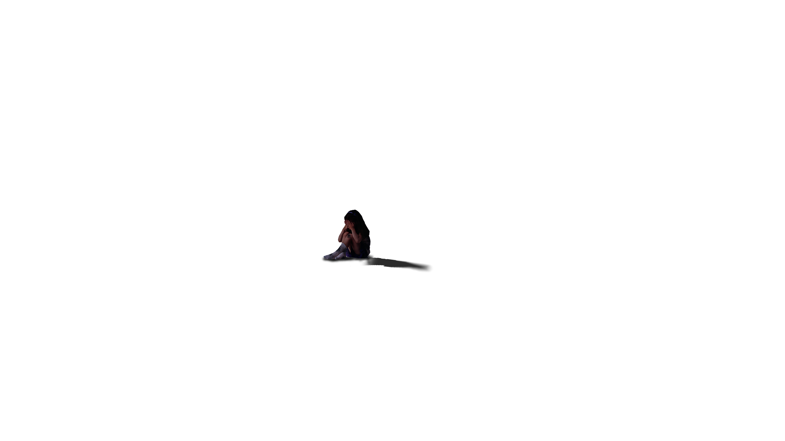
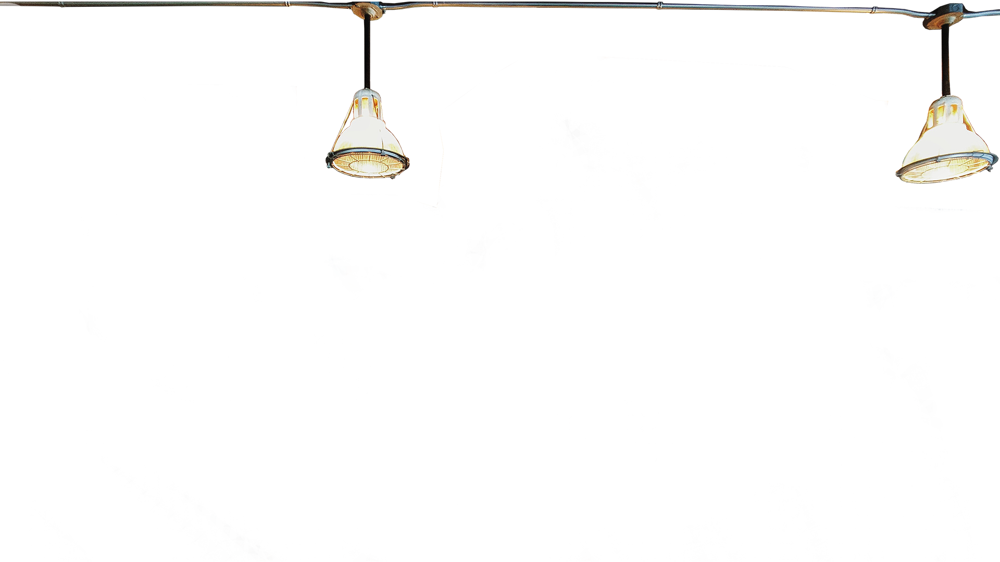

Ein Unternehmen, welches sich auf KI Technik-Gadgets spezialisiert hat, um den Alltag des Menschen zu
erleichtern.
2019
Durchbruch und immer noch Haupteinnahmequelle ist "EZY". Ein Sprachsystem, das die Gewohnheiten eines Nutzers studiert und ihn anhand der Daten an wichtige Dinge erinnert.
Besonderheit der Systeme von Lacuna ist die Möglichkeit der KI eine Persönlichkeit zuzuweisen, die mit Hilfe
einer Analyse bestimmt mit welchem Charaktertyp und mit welcher Popkultur der Nutzer am ehesten kooperiert.
Besonders wichtig bei Lacunas Diät-Helfer "Khalory" und Styling-Assistent "Glam0r", die im engen Kontakt mit
dem Gemütszustand des Kunden stehen und basierend auf diesem agieren.
Ein Projekt, das gerne von der Chefetage und Geschäftsleiter Tyrell Ashton unter den Teppich gekehrt
wird, ist ein Medizin-Gadget, das in Kooperation mit einer Entzugsklinik entstand und Süchtigen beim
Entzug im Eigenheim unterstützen sollte.
Dies ging so lange gut, bis "Crave" jegliche Art von Nahrung als illegale Droge erkannte und den
Süchtigen dazu anwies sich von diesen loszureißen und fernzuhalten.
Daraufhin produzierte Lacuna aus einer Marketing-Strategie heraus eine Saison lang Robo-Tiere für Kinder
mit Allergien.
An all diesen Projekten arbeitete Quinn Walker mit.
„What is progress without risk?“
„A different route to the same old destination.“
- Quinn Walker, 2019 -
Als Senior UX-Designerin ist sie auf die Untersuchung wie Nutzer auf KIs reagieren und
Persönlichkeits-Kalibrierung spezialisiert. Nach "Crave" schlug Quinn dem Unternehmen einen Richtungswechsel
vor: Humanoide Androiden mit Lacunas Besonderheit: Hoch entwickelte Anpassung an Persönlichkeiten. Ihr
Vorschlag wurde nicht nur abgelehnt, sie wurde regelrecht ausgelacht und an ihre Position erinnert, in der
sie gezwungen wurde zu verharren. Lacuna wollte lediglich bei unterstützender Technik bleiben und ein
weiteres Fiasko a la "Crave" vermeiden.
Menschen haben Angst vor so humanoiden Robotern, Quinn.
Warum fürchten sie etwas, das wie sie aussieht?


Schauspielern ist Anpassung.
Anpassung an unendlich viele, unglaubliche Situationen.
Wie könnte ich ihn besser kalibrieren als ihn durch jede Emotion zu schicken mit ständig neuen Leuten,
die selber so tun als seien sie wer anders?
Ich kann mir keine bessere Lernumgebung für eine KI vorstellen.
Über Monate hinweg verschanzte Quinn sich nachts in den Laboren der Robotik Firma um dort eine hoch entwickelte
KI zu bauen, die jeden täuschen sollte.
Ziel: Zeigen, dass KIs nicht vom Menschen zu unterscheiden sind.
Nach einigen Jahren Entwicklung stand schließlich ein Roboter vor ihr, der genauso gut ein Freund, ein
Kollege hätte sein können.
Nanoroboter in seiner Haut sorgten für Mikroexpressionen,
Kühlmittel in seinen flexiblen Kunststoff-Adern für eine menschliche Temperatur,
Echt-Haar Implantate und Biokomponenten für ein realistisches Aussehen.
Er war perfekt. Model RAM-NV9102 war in der Tat perfekt.
Äußerlich.
Bisher hatte Quinn lediglich kleine neuronale Netze für KIs programmiert.
Sie sollten soweit Daten sammeln und analysieren können, um ihren Nutzern passende Audio-Phrasen ausgeben zu
können. Ebenso sollten sie anhand der Antworten auf diese Phrasen dazulernen, aber nie so weit, um mehr als ein
technisches Objekt und Hilfsmittel durchzugehen.
Aber RAM-NV9102 musste mehr können. RAM-NV9102 müsste auf jede erdenkliche Frage eine Antwort wissen, Fehler
zulassen, Emotionen simulieren und Emotionen verarbeiten können. Er durfte nicht auffallen, nicht negativ und
nicht zu sehr positiv, aber wie sollte man so eine KI programmieren? Für alle anderen Lacuna Projekte lud Quinn
regelmäßig Tester ein, die die KIs kalibrierten. Aber solch eine Prozedur erregte Aufsehen, vorallem würde sich
die Nachricht, dass es solch einen lebensechten Roboter gab, wie ein Lauffeuer verbreiten. Quinn musste
RAM-NV9102 in aller Öffentlichkeit verstecken und von dieser lernen lassen.
Und so war Adam Candid geboren.
Hollywood Schauspieler mit Zahnpasta-Lächeln.
Quinn, nun unter Alias Grace Freeman tätig um als Adams Managerin aufzutreten, schleuste ihren neuen Star mit
teuren Technik-Geschenken und vielen Kontakten in diverse Castings ein. Adam, pure Perfektion, allzeit bereit
und stets mit passender Reaktion, wurde schnell in den Medien bekannt und für seinen ersten, großen Film
gecastet.
"Just another day - in spring"
Adam hatte das große Glück seine neu gewonnen Fans nun in einem weißen Kittel und mit Stethoskop überzeugen zu
dürfen. In dem neuen Drama ging es um eine Frau, die sich Hals über Kopf in ihren neuen Arzt verliebt, der sich
seinen eigenen Gefühlen nicht klar wird, weil er viel zu sehr damit beschäftigt ist, ihren Krebs zu bekämpfen.
Dieser Film hatte alles: Liebe, Tränen, Lacher. Dieser Film hatte Adam.
Immer und immer wieder gingen sie die gleiche Szene durch. Sie hatten bereits früh morgens begonnen zu drehen
und der Crew keine einzige Pause eingeräumt.
Das verstößt doch gegen das Arbeitsschutzgesetz...
Soll ich meinen Arbeitgeber darauf hinweisen?
...nein, es ist wahrscheinlich besser,
wenn ich schweige.
Adam verstand das Business.
Natürlich verzog der Star keinen seiner synthetischen Muskel als angewiesen wurde, nun ein weiteres Mal die
Szene im Krankenzimmer durchzuspielen. Wie auf den Gesichtern seiner Kollegen erkennbar, zog auch Adam im Unmut
seine Stirn in Falten.
Schließlich standen die Requisiten und Komparsen wieder auf Ausgangsposition. Alles auf Anfang. Alles auf Adam.
Zeigt mir, dass ihr verdammt
nochmal leidet!
CUT!!!
Mögen Sie Hunde,
Dr.Green?
Sie sind im Krankenhaus
nicht erlaubt.
Das war nicht
meine Frage.
Das war Ihre Antwort.
Super, Leute, super.
Noch eine Einstellung vom Fenster aus, die Lampe da hinten strahlt mir auch zu sehr.
5 Minuten Umbau-Pause!

Es war weit nach Mitternacht und keiner daran gewöhnt noch so lange zu arbeiten, ganz zu schweigen ohne Pause.
Lichter. Überall. Blitze schossen in sekundenschnelle durch den Raum. Seine Augen wanderten auf der Suche nach
einer Epilepsie-Warnung die Wände entlang und fanden keine. Er saß zurückgelehnt, viel zu natürlich für das was
er war, aber gut für das, was er versteckte zu sein.
Mit den Fingern seiner rechten Hand trommelte er rhythmisch auf der Tischplatte und simulierte so Ungeduld.
Quinn, auf diesem Presse-Event unter dem Alias Grace Freeman unterwegs, glaubte sich zu erinnern, dass Adam
diese Angewohnheit vom Set-Techniker kopiert hatte, der immer wieder ungeduldig auf den Schaltpulten trommelte,
wenn er auf den Szenenwechsel warten musste, er hätte genauso gut rumtigern können.
Adams Analyse-Modul war also keinesfalls fehlerhaft, gut.
Ein Scheinwerfer richtete sich auf den Star des Q&A's und das Dimmen des Lichts im Rest des Raumes signalisierte
den Anfang, schließlich verstummte auch das allgegenwärtige Gemurmel aus der Menge, das Adam sicher nervös
gemacht hätte, wäre sein mechanischer Körper dazu fähig gewesen, Neurotransmitter zu produzieren und nicht nur
zu simulieren.
Grace atmete tief aus, während Adam seine erste Frage gestellt wurde.
Donovan von
Headlights Magazine hier.
Wie erklären Sie, dass ihre Rolle trotz Liebesgeständnis von Rose zunächst kaum mehr als ihre Diagnose
bespricht?
Das Blitzlicht wurde wieder stärker und die Mikrofone waren nun so nahe, dass selbst Quinn sich eins hätte
packen können. Viele wunderten sich über die emotionale Kälte des Arztes, schließlich wurde der Film als Romanze
vermarktet und das "Titanic der Ärzte" genannt.
Wissen Sie..
Adam lächelt in die Runde und hebt erklärend die Hand.
...manchmal ist die beste Art sein Herz zu schützen,
so zu tun als hätte man keins.
Dr. Green war es wohl zunächst wichtiger dafür zu sorgen,
dass er ein paar Jahre länger Zeit haben würde Rose zu zeigen,
dass er sie liebt, anstatt es ihr nur zu sagen.
Erstauntes Geraune im Raum, Lächeln auf den Lippen der Frauen, Nicken bei den Männern.
Souveräne Antwort, sie waren zufrieden.
Es folgten weitere Fragen zu seiner Rolle, der Beziehung zu Kollegen und wie es für ihn nun weiter gehen würde.
Nicht von einer Frage ließ er sich aus der Ruhe bringen, aber es ließ nicht einmal Quinn an seiner Performance
zweifeln. Wenn man hinsah, bemerkte man das leicht nervöse Wippen seines linken Fußes, seine angespannten
Kiefermuskeln und das gelegentliche Kauen auf seinen Lippen. Er war so gut. Er war so menschlich.
Letzte Frage, es war also fast geschafft.
Maria Gonzales vom DeepIn Podcast. Wie war es für Sie so viel Neues lernen zu müssen?
Dies war immerhin Ihr erster großer Film, liege ich da richtig,
Mr. Candid?
Ich sehe es als Privileg an,
die Kapazität und Möglichkeit zu haben, von so vielen, unterschiedlichen Menschen lernen zu dürfen.
Mein Ziel ist es, dieses Geschenk niemals zu verlieren und so schnell dazu zu lernen wie nur
menschenmöglich.
Wie Sie wissen, wurde Rom nicht
an einem Tag gebaut,
Mr. Candid.
Aber es verbrannte an einem.
Losing is a way of winning
Er war einfach nicht mehr er selbst gewesen. Das hatte jedenfalls seine geliebte Cheryl gesagt und
jetzt, wo er vor den gewaltigen Monumenten der Natur stand, wurde ihm bewusst, dass sie Recht gehabt
hatte. Mason war wirklich nicht mehr er selbst gewesen. Vom einstigen, vor Energie sprühenden
Architekten war an manchen Morgen im Spiegel nichts mehr übrig, es war ein langsamer, aber scheinbar
unaufhaltbarer Prozess gewesen, denn ein Problem konnte nur gelöst werden, wenn man es auch sah. Aber
Mason tat das nicht.
Mason ging zur Arbeit, fuhr nachhause, küsste Cheryl, aß und verschwand ins Casino.
Dann ging Mason zur Arbeit, fuhr nachhause, begrüßte Cheryl und verschwand wieder.
Und schließlich ging Mason zwar zur Arbeit, aber danach erblickte man ihm hinter seinem
Lieblingsautomaten.
Früher war es der Kaugummiautomat gewesen, an dem der Mann Münze nach Münze reinwarf, um einen
bestimmten Ring zu gewinnen und mit diesem Cheryl um ihre Hand zu bitten. Strahlende Augen, keine
Augenringe, die ein Mandala bildeten. Mittlerweile war es ein einarmiger Bandit weit hinten im Casino,
der sein Geld mit einem glücklichen Sound schluckte.
Cheryls Worte hallten unsanft in seinem Kopf wider.
Er verschluckt nicht nur dein Geld, er verschlingt dich gleich mit!
Er verschluckt nicht nur dein Geld, er verschlingt dich gleich mit!
Eine der ersten Phasen waren die Wut. Er war so wütend, dass er aus purem Trotz nicht mehr sein Geld
verspielte, nur, um allen zu beweisen, dass er kein Problem damit hatte aufzuhören. Und dann ging er
ebenso aus purem Trotz wieder spielen, um zu beweisen, dass er sich nichts befehlen lassen musste. Aber
die Wut blieb.
Wut zu fühlen war traurig sein, während er immer noch fähig dazu war sich stark zu fühlen. Es war eine
Sucht. Aber wie jede Sucht frisst sie einen lebendig auf. Und an Mason fraß sie so lange, bis nichts
mehr übrig war. Bis Cheryl ihm drohte aufgrund seiner Beratungsresistenz die Scheidung einzureichen und
der letzte Ausweg diese Reise war.
Die frische Bergluft stieg in seine Nase und schwemmte die abgestandene Casino-Luft aus seinen Lungen
raus. Selbst seine Muskeln fühlten sich geschmeidiger an und Mason musste sich nicht einmal strecken, um
zu entspannen. Ein Zeichen seiner Genesung war ebenfalls, dass er bei Anblick des Abgrundes vor ihm
nicht an einen Sprung dachte, sondern an die Größe des Potentials, das immer noch in ihm steckte. Es war
wie ein Tier, eingesperrt in einem Käfig und es kratzte, biss, knurrte, nur um einen Moment der Freiheit
erblicken zu können.
Diese wundervolle Ironie, bei der wir uns am meisten selbst finden, wenn wir uns verlieren.
Die Szene endete mit dem Schweigen der gesamten Crew, nicht einmal der Regisseur verlangte aufgebracht
eine neue Einstellung und einhergehend eine Wiederholung. Eindruck legte Spannung in die Luft, bis der
leitende Tontechniker leise auspfiff. Es war eine der emotionaleren Szenen und Adam hatte eine
großartige Darstellung hingelegt, die sich wohl als Höhepunkt des Filmes erweisen und sich für das
Filmstudio rentieren würde, immerhin hatte der newcomer Star bisher niemanden enttäuscht, im Gegenteil.
Quinn alias Grace wurde vor Filmangeboten erschlagen, ließ ihrem Androiden jedoch weiterhin die freie
Wahl. Es ging nie um das Geld. Keine Summe der Welt konnte wahren Fortschritt ersetzen.
Einige der Mitarbeiter beschäftigten sich schließlich mit dem Schminken der Statisten und den Umbau für
die Szene, während Adam eilig ein neues Skript in die Hand gedrückt wurde, das prompt eine Szene
hinzufügte, die es am Morgen noch gar nicht gegeben hatte.
Für Adams Prozessor kein Problem, seine Augen scannten die Blätter in unmenschlicher Schnelle und seine
synthetischen Muskeln kamen nur knapp mit dem Umblättern hinterher. Sein Gehirn kategorisierte, schaffte
synaptische Verbindungen, analysierte. Er war so viel besser als jeder Mensch.
Abermals erreichen Adam einige Rollenangebote.
Für welche soll er sich entscheiden?
"Losing is a way of
winning"
Berge und eine weite Landschaft von nichts umzingeln den Süchtigen, der nach der Drohung der Liebe
seines Lebens sich von den Spielautomaten losreißen will, um ein für alle Mal seine Sucht zu beenden,
bevor diese ihn und alles, was er liebt, vernichtet.
Wo ein Wille, da ein Weg, beschließt er und unternimmt die Reise seines Lebens.
"Branded for Failure"
Die nervenzerreißende Verfolgungsjagd eines Entführers, der sich damit arrangieren muss, dass nicht
immer alles genau nach Plan verläuft.
Vor allem mit einem kleinen Mädchen an seiner Seite, welches nicht verstehen will, dass ihr Vater nicht
auf der Seite der unschuldigen Engel steht und seine Nerven aus Stahl auf die Probe stellt.


"Branded for Failure"
John (alias Adam) hatte eigentlich nie etwas gegen Kinder gehabt, jedenfalls nichts das half, aber nun
sorgte dieses stetige, kurze Schniefen der Kleinen dafür, dass seine Nackenmuskulatur so hart wie Stahl
war. Er war wirklich kein Fan von ihr, wirklich kein Fan.
...Papa..
..Hilfe...
Kinder, die ohne Socken im Garten spielen haben es verdient!
Sie soll endlich still sein.. auch ich muss den Gestank und den Regen ertragen.
Es hat doch bis hierhin so gut funktioniert.
Die Szene ließ Adam unweigerlich aus einem Statistik-Forum abrufen, dass 2 von 3 Kidnappings von
jemandem durchgeführt werden, den das Opfer kennt.
Ausnahmen bestätigten die Regel.
Der Vater des Mädchens, seinerseits korrupter Politiker und in der Wirtschaft tätig, hatte doch wirklich
gedacht, damit durchzukommen gesammelte Spendengelder für ein Problemviertel zu veruntreuen und lieber
in seinen neuen Jachthafen auf den kanarischen Inseln zu stecken. Seine Wähler machten ihn reich, indem
sie ihm seine schmutzigen Lügen abkauften. Schmutziger als die weißen Schleifensocken seiner kleinen
Emma. Emma, die nun immer lauter wurde.
Du benimmst dich lieber. Du wirst mich nicht mögen, wenn ich wirklich sauer bin.
Einen kurzen Moment schaute sie John mit großen, blauen Kulleraugen an und vergrub den Kopf schließlich
wieder in ihren Armen. Fontaine, ihr lügender Vater, würde sich sicher bald auf der hinterlegten
Wegwerf-Nummer melden, aber erst sollte er erfahren, was unverfälschte Panik bedeutete, bei der kein
Jachthafen der Erde half, ihn abzulenken.
CUT. Nächste Szene.
In Eile kletterte John mit Emma auf dem Arm über einen Zaun und die Kleine hatte überraschenderweise die
Nerven sich zu winden und dafür zu sorgen, dass er sich am oberen Stacheldraht schnitt. Nicht nur John,
sondern Adam, der diesen verkörperte ebenso. Die Szene endete zu Adams Gunsten an dieser Stelle und es
wurde sich sofort um die kleine Nebendarstellerin gekümmert, die glücklich mit einem Schluss-Eis davon
trottete, Adam seinerseits stand jedoch mit verletztem Arm am Rand des Sets. Er versuchte sein Bestes
die Wunde abzudrücken, obwohl nicht vonnöten. Quinn beobachtete, wie er vor Schmerzen das Gesicht
verzog, gleichwohl er diese lediglich simulieren konnte - unmöglich fühlen. Faszinierend war, dass er
dies selbst tat, wenn kein richtiger Mensch, als solcher Adam lange überzeugte, in seiner Nähe war.
Alles, was darauf hinwies, dass er nicht aus Fleisch, Blut und einer Seele bestand, versteckte sich in
dem Inneren seiner Wunde. Blaue Kühlflüssigkeit floss seinen Arm herunter und verklebte seine Hand.
Macht mich Schmerz zu einem von ihnen? Ist es das, was mir fehlt?"
Verwunderung legte sich in Adams Gesichtszüge als Quinn ihm den Umschlag entgegengehalten hatte. Ein schwerer,
aber doch filigraner Umschlag mit tiefblauer Schrift und goldenem Wachssiegel. Er sah aus als stammte er aus
einem Königshaus, aber der Absender war der "Ausschuss des Awakening Phoenix -Preises“.
Die Zuschauer hatten einige Wochen Zeit sich für einen Schauspieler zu entscheiden, der mit Frische und neuem
Talent überzeugen konnte und sie hatten sich für den einzig wahren, mechanischen Adam Candid entschieden. Einige
schwärmten für seine Rolle als Dr. Green, die anderen waren fasziniert von seiner Leistung als grausamer
Entführer, aber im Endeffekt waren sie alle überzeugt von Adam. Überzeugt davon, dass er einer von ihnen war.
Und genau so sah er auch aus als er ein letztes Mal seine Fliege richtete und auf dem ausgerollten roten Teppich
den Weg zum Saal entlang schritt.
Er war nicht oft in der Öffentlichkeit zu sehen, allein das ließ Quinn jeden seiner Bewegungen mit Adleraugen
beobachten, aber niemand sorgte sich darum wie lebensecht er wirkte, außer natürlich die, die ihn erschaffen
hatte. Der Rest der erschienenen Herrschaften, ihrerseits weitere Newcomer, Regisseure oder bloße Begleitungen,
interessierten sich eher für den Designer seines Anzuges, seine noch kommenden Rollen und insbesondere dafür,
dass er ohne eine weibliche Begleitung erschienen war.
Schon bald waren sein Leá Moreau Anzug vergessen, Augenmerk lag auf seinen Armen, die um keine attraktive Frau
fassten und das eigentlich nie. Auf Fotos war er stets allein oder an der Seite seiner Managerin Grace, kein
Café verließ er zu zweit und in keinem Hotelzimmer lag ein vergessener Frauenschuh achtlos herum. Das Raunen im
Raum richtete sich erst wieder auf das wofür sie sich eigentlich versammelt hatten, als Adam auf die Bühne trat
um die kleine, sorgsam vergoldete Statue eines Phönix entgegenzunehmen und ein paar dankbare Worte an die Gäste
zu richten.
Wie sie bereits erahnen können, ist es eine große Ehre für mich diesen Preis empfangen zu dürfen - und
das auch noch für mich selbst. Es fällt mir schwer in diesen Momenten in passenden Worten die Dankbarkeit
auszudrücken,
die ich empfinde, immerhin werden sie mir üblicherweise in den Mund gelegt.
Ich danke Ihnen allen ganz aufrichtig, vor allen denen, die mich auf meinem Weg hier hin unterstützt
haben und all die Fans, die auf mein Können plädiert haben.
Es liegt ganz allein in uns, ob wir verbrennen und als Asche unser Dasein fristen oder ob wir aufstehen
und als Phönix in ein neues Leben fliegen. Ich werde mich bemühen Ihnen zu zeigen, dass nur letzteres der
wahre Weg sein kann.
Vielen Dank!
Applaus und angeregtes Raunen in der Menge, einer pfiff.
Die Menschen waren wahrlich begeistert von diesen wenigen, aber ausdrucksstarken Worten und es war ganz
vergessen, dass keine Frau neben ihm abgelichtet wurde. Lediglich Quinn hatte sich eine mentale Notiz gemacht,
diese kleine Lücke in seinem Leben, in dieser so echt wirkenden Illusion, zu schließen. Alles andere - das
strahlende Lächeln, das erleichternde Fassen an die Brust, das nervöse Kauen auf den Lippen - war perfekt.
Adam war perfekt.
The Art of Dying
Welche Rollen Adam schlussendlich bei der unermesslichen Anzahl von Angeboten annahm, ließ Quinn alias
Grace ihn ganz allein entscheiden. Bei jeder neuen Entscheidung seinerseits war sie doch wieder über die
jeweilige neue Rolle erstaunt, immer hinterfragend wegen welchen Gründen oder aufgrund welcher Zahlen in
seinem künstlichen Verstand er diese gewählt hatte.
Der neue Hollywood-Star stand am Abend abgedunkelt auf dem Set seines neuen Films und wartete wie
bereits hunderte Male davor auf das für die Crew ersehnte "CUT". Alle standen wieder auf ihrer Position,
aber es war, als sei das Set geteilt.
Sie auf der einen Seite, Adam allein auf der anderen.
Arkin bewegte das Messer, dessen Gewicht er vorher einige Male in seiner rechten Hand getestet hatte,
mit solch einer Präzision, dass nicht vorhandene Beobachter hätten meinen können, dass er versuchte mit
Licht zu malen. Beobachter. In dieser kleinen, nassen Gasse gab es niemanden außer ihm und seine Pläne.
Pläne, abgedruckt in schwarz auf weiß, versehen mit einem Namen, der ausdrückte: Hiermit mache ich
Profit. Arkin liebte es nicht, aber er verehrte es, ehrfürchtig, wie man ein Kunstwerk verehrte, das
berühmter war als die Hände, die es einst erschufen.
Das Buch mit schlichtem, schwarzen Einband und den silbernen Lettern, die "Erschaffen für den Tod"
formten, lag ordentlich aufgeschlagen vor ihm und er ging mit seinem Zeigefinger sanft die Zeilen des
Werkes ab, das seit Neuestem seine Religion ersetzte. Der Protagonist Joe Sharpen hatte in diesem
Thriller Roman von Steven Raine das kleine Problem an Shizophrenie zu leiden und es als nötig zu
empfinden, seine Halluzinationen auf die faszinierendsten Arten zu ermorden, nur um im Morgengrauen
festzustellen, dass er auf diesen Trips reale Frauen tötete.
Arkin las die Zeilen zum tausendsten Mal, aber es minderte sein seliges Lächeln mitnichten. Das hier war
seine Bestimmung. Dieses Buch, die Morde in die echte, plastische Welt zu überführen und sie nicht nur
als Anleitung, sondern ebenso als Niederschrift seines Lebensweges zu sehen.
Das Leben imitiert die Kunst. Arkin imitierte das Leben.
Sein frischestes Meisterwerk lag vor ihm und verblutete vermutlich unter lähmenden Schmerzen. Ebenso
möglich war es, dass der Grund, warum die Blondine keinen Muskel mehr bewegte, der war, dass sie bereits
seit einigen Minuten tot war. Arkin warf einen Blick auf die nächste Seite des Buches und blickte auf
seine nächste Anweisung. Mit seiner linken Hand stabilisierte er den Arm der Frau, um mit einer
Genauigkeit, die keinem wichtiger war als ihm, die Zeichen aus dem Thriller hinein zu schnitzen. Noch
flossen kleine Blutmengen aus ihr heraus, er hatte bereits den Namen der Frau vergessen, aber ihre
Körpertemperatur war längst gesunken und in einer Stunde würde wohl die Leichenstarre einsetzen. Dann
war sie verewigt.
CUT.
Die Dame, die für die Requisiten zuständig war, pfiff eilig zwei weitere, starke Crew-Mitglieder
zusammen, um die extra für den Film angefertigte Puppe von Adam wegzutragen und für die nächste Szene
vorzubereiten. Damit waren eigentlich nun alle Personen am Set beschäftigt, außer der Regisseur, der
aufgebracht einem Komparsen hinterherlief, der abermals sein frisch aufgelegtes Make Up ruinierte.
Das Reinigungspersonal war doch beauftragt das Kunstblut zu entfernen.
Ich glaube, in der Wasserlache ist immer noch welches zu sehen...
Trügt mich das Licht der vielen Halogenlampen am Set?
Irgendwas in seinen Schaltkreisen konnte nicht anders, als doch seine Hand ins Wasser gleiten zu lassen.
Und sogleich sprühten die Funken und Adams Hand war für einen Moment hell erleuchtet.
Abermals erreichen Adam einige Rollenangebote.
Für welche soll er sich entscheiden?
"The Art of Dying"
Eine Buchreihe und ein Mann, der beschließt, dass es das Werk seines Lebens ist, dieses in die echte
Welt zu überführen.
Keine der Figuren darf überleben, kein Tropfen Blut darf unvergossen bleiben. Ein Wettlauf mit der Zeit,
denn wie lange kommt er damit durch, bevor seine Kunst mit ihm in Verbindung gebracht wird?
"Little Noah's big World"
Ein bemühter Vater, der sich im Karussell des Lebens wiederfindet und dieses mit seinem autistischen
Sohn bestreitet. Während ihrer gemeinsamen Zeit merken sie, dass sie zwar unterschiedlicher nicht sein
könnten, doch viel voneinander lernen können. Manchmal muss man die Perspektive ändern, um seine Welt
neu zu entdecken.
Dad, ich wünschte Mum wäre hier.
Die Geräuschwelle der Kirmes traf ihn wie die heiße Luft, wenn man im Sommer aus einem angenehm
klimatisierten Zug steigt. Es klingelte kurz in Matthews Ohren, aber die Worte seines Sohnes trafen ihn
stärker als das Schreien und Lachen der anderen Besucher, gemischt mit den blinkenden Lichtern und
schrillen Sounds der Fahrgeschäfte.
Amelia hatte ihn vor einem Jahr verlassen, nach einer langen, schlechten Phase. Matthew fiel es immer
noch schwer ihr diese Entscheidung übel zu nehmen, immerhin hatten sie es ebenso lange wie die schlechte
Phase versucht wieder hinzubekommen. Sein Kleiner, Noah, verstand noch nicht ganz, warum sein Dad einen
Stundenplan für die gemeinsame Zeit mit ihm hatte. Warum Feiertage immer aufgeteilt wurden, er seine
Eltern seit Monaten kaum mehr als fünf Minuten im selben Raum stehen sah. Matthew hatte es versucht,
etliche Male mit den unterschiedlichsten Wortlauten, aber für Noah war es noch schwerer zu verstehen als
für andere Kinder seines Alters.
Ich weiß, Kleiner.
Ich weiß.
Noahs Autismus führte dazu, dass er Schwierigkeiten damit hatte seine Bedürfnisse und Wünsche zu
kommunizieren, wie es andere Kinder tagtäglich taten. Manchmal verstand er die einfachsten Aussagen
nicht, an anderen Tagen faszinierte er mit spannenden Fakten. Er ging auf Zehenspitzen durch die Welt,
als würde er am liebsten die ganze Erde überblicken und alles was dazu gehörte. Doch egal wie und warum
er das sagte, was er sagte, Matthew hatte stets Geduld mit Noah. Auf nichts war er stolzer als auf ihn.
Umso mehr überraschte ihn die aufrichtige Aussage seines Sohnes.
Ein klarer Moment inmitten einer verschwommenen Szenerie, das sich Leben nannte.
Die Idee den Jahrmarkt zu besuchen war Matthews gewesen, er verpasste normalerweise nie einen Termin, um
seinen Sohn zu sehen, aber beim letzten hatte seine Arbeit als Journalist dazwischengefunkt. Geschichten
gehen nicht um 8 ins Bett und stehen um genau 6.24 Uhr wieder auf wie Noah es tat. Schlagzeilen folgten
keiner strengen Routine, auch wenn Matthew sich an solchen Tagen wünschte, dass sie genau dies tun
würden. Umso mehr hatte er sich gefreut, als der kleine Noah ihm von unten entgegen gelächelt hatte.
Kein Kind, das oft lächelte. Kein Kind, das übermäßig redete. Matthew sagte immer, dass er eher ein
Beobachter in der Welt ist.
Warum wohnen du und Mum nicht mehr zusammen?
Ach, Noah. Es ist nicht immer...leicht. Zwischen deiner Mum und mir fielen zu oft falsche Worte.
Manches davon kann man nicht vergessen, verstehst du das?
Ich glaube manche Menschen vergessen, dass Wörter da sind, um Ideen zu teilen. Manche spielen mit
ihnen rum wie mit Hobbys."
Abermals sah Matthew überrascht zu seinem Sohn hinab. Solch verblüffende Worte seines sonst schweigendes
Noahs rissen ihn stets aus der Bahn. Ständig behaupteten die anderen Eltern tuschelnd, er sei weltfremd.
Gerade in diesem Augenblick fiel Matthew auf, wie sehr das stimmte und wie sehr eben jene Worte ein
Kompliment waren.
Möchtest du meine Hand nehmen?
Da vorne ist das Riesenrad.
Noahs kleine Hand erfasste seine große und Matthew schwor sich, noch einiges von ihm zu lernen.
Ebenso wie Matthew sollte auch Adam noch einiges lernen. Sein Status war weit fortgeschritten
und selten beobachtete Quinn solch eine flüssige Kalibrierung in einem ihrer Werke.
Er hatte sprachliche Gewohnheiten angenommen, entwickelte Vorlieben und Aversionen, simulierte Mitleid,
wenn von Nöten. Und trotz all dieser geballten Intelligenz, hatte Adam nicht darauf geachtet, dass das
Jahrmarkt-Set, in dem er sich bewegte, sehr realitätsnah gehalten wurde. So hatte sich die
Set-Dekorateurin dazu entschieden, jeglichen Müll, der zu einer Kirmes passte, in unregelmäßigen
Abständen auf dem Boden zu verteilen.
Im Laufe des Tages wurde das Set in dieser Hinsicht sogar angepasst und in einem unachtsamen Moment kam
es dazu, dass Adam auf einem ausgeschütteten Milchshake ausrutschte und unsanft mit seinem Kopf auf dem
Bordstein aufschlug. Es dauerte nicht lange bis seine Module sich wieder beruhigten, aber beim Aufprall
hatten sich einige Kabel gelockert, die nun aus seinem Ohr ragten. Quinn schaltete ebenso schnell wie
ihr Meisterwerk und verschwand mit eben jenem in seine Umkleidekabine.

Quinn war sich nicht sicher, ob es an einer möglichen Prägung lag oder ob Adams freier Wille sich noch nicht
gänzlich herauskristallisiert hatte, aber wenn sie etwas von ihm wollte, lehnte der Android nicht ab. Vielleicht
lag es auch daran, dass sie mit Adam auf einer Augenhöhe sprach, als sei er ihresgleichen. Für Quinn war er das.
Er war genauso Mensch wie der Typ, der morgens vor ihr immer den letzten Chocolate-Chip Keks kaufte, die Frau,
die immer genau dann aus dem Haus ging, wenn sie es tat oder all die Menschen am Set, die Adam bewunderten, ihn
auf ein Podest stellten. Es waren lediglich Kleinigkeiten, die dafür sorgten, dass die Hollywood-Masse
tuschelte. Und eine dieser Kleinigkeiten drohte den beiden über den Kopf zu wachsen:
Adam datete Niemanden.
Nicht nur, dass er niemanden datete, er wurde abseits des Sets nie mit einer Person gesichtet, die dem hätte
nahe kommen können. Quinn befürchtete, dass sich die Presse bald auf Fake News stürzen würde, die schwieriger zu
beseitigen waren, als Adam eine Frau für seine Schokoladenseite zu besorgen.
Und so kam es dazu, dass Adam sich an einem frühen, sonnigen Nachmittag in einem Londoner Café wiederfand, das
umzingelt war von Journalisten, die überzeugt davon waren, dass sie Meister der verdeckten Ermittlungen seien.
Einer von ihnen hatte den größten Hut auf, den Adam je anstrengend ignorieren musste. Es war gut, dass sie hier
waren, genauso hatte es Quinn geplant, immerhin war sie diejenige gewesen, die dem Headlights Magazine eine
anonyme Nachricht über dieses Treffen zukommen gelassen hatte. Sie selbst saß mit einer Perücke und
überdimensionaler Sonnenbrille in der Ecke des Cafés und beobachtete die Blondine, die sie ebenso hierher
koordiniert hatte.
Veronica Middle, eine professionelle Escort-Dame, dessen Firma höchste Diskretion versprach und der Quinn die
aktuelle Presse-Situation geschildert hatte. Mit einem wissenden Lächeln hatten sie behauptet, dass Veronica die
einzig Richtige hierfür war.
Von weitem beobachtete Quinn das Spektakel mit einem nervösen Lächeln auf den Lippen und was sie beobachtete,
war in der Tat gut.
Mit einem Zahnpasta-Lächeln stand Veronica mit ihrem Kaffeebecher vor Adam und lachte herzhaft über einen Witz,
den der Android niemals gemacht haben konnte. Eine spielerische Berührung am Arm und Quinn konnte förmlich schon
das Blitzlicht der Kameras hören und die Schlagzeilen von morgen vor ihrem inneren Auge sehen. Sie konnte jedoch
lediglich beobachten, nicht das Gespräch der zwei verfolgen.
Das muss wohl die lustigste Pick-up Line sein, die je existiert hat.
Keine Sorge, das ist nur Plan A.
Was ist Plan B?
Dich zu entführen.
War das etwa flirten, Mister?
Ich flirte nicht, Veronica. Ich bin nur extra nett zu Jemandem, der extra attraktiv ist.
Sein letzter Satz entlockte ihr ein aufrichtiges Lachen, die Anspannung ihres Jochbeinmuskels und die kleinen
Falten in ihren Augenwinkeln, entstanden durch ihre Augenringmuskulatur, zeugten von nichts anderem. Langsam
fühlte Adam sich in die Situation ein, er verstand allmählich was von ihm erwartet wurde und so beruhigte sich
auch sein Analysemodul, welches in unbekannten Situationen schwer zu arbeiten hatte, um passende Reaktionen
abzuwägen und zu modellieren. Auch wenn ihm Quinn erklärt hatte, warum er überhaupt Veronica hier antreffen
sollte, musste er überlegen, welche Maßstäbe hier griffen, doch schließlich näherte sich das Ende des Dates und
die etlichen Fotografen verstauten sicher die neuen Bilder und das teure Equipment, welches abermals seinen
Dienst verrichtet hatte.
Veronica, warte einen Augenblick. Gehört das Treffen in die Kategorie perfekt?
Die Blondine drehte sich auf halbem Weg noch einmal um, legte den Kopf leicht schief und warf einen auffällig
verwirrten Blick Richtung Fensterfront, immerhin waren alle Journalisten zufrieden gegangen.
Ist das denn wichtig?
Faszinierend ist, wenn wir Menschen erlauben uns in unseren schlimmsten Momenten zu sehen, in unseren
schwächsten. Wahre Verbindung entsteht, wenn rein gar nichts perfekt ist, Adam.
Viel Erfolg mit der Presse.